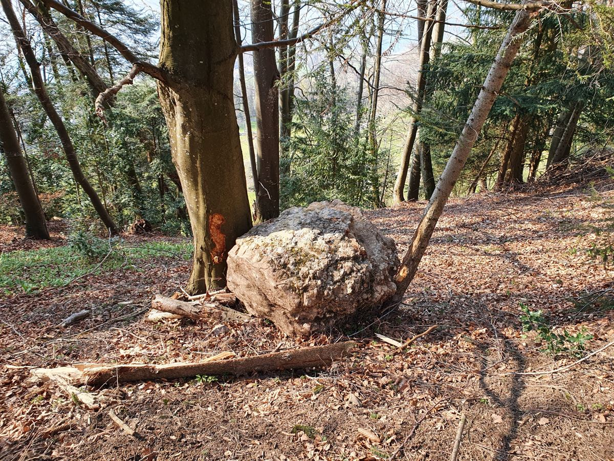
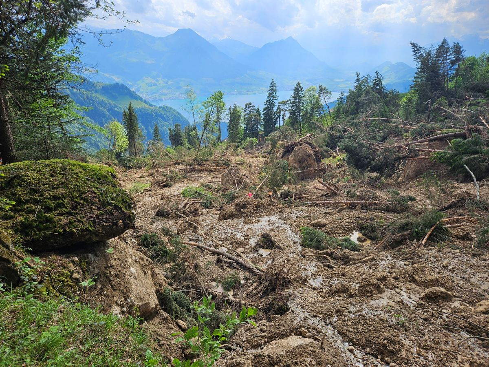
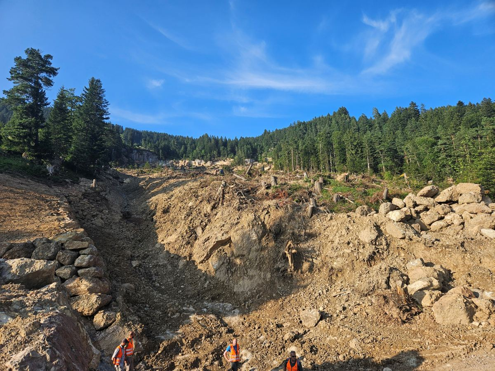
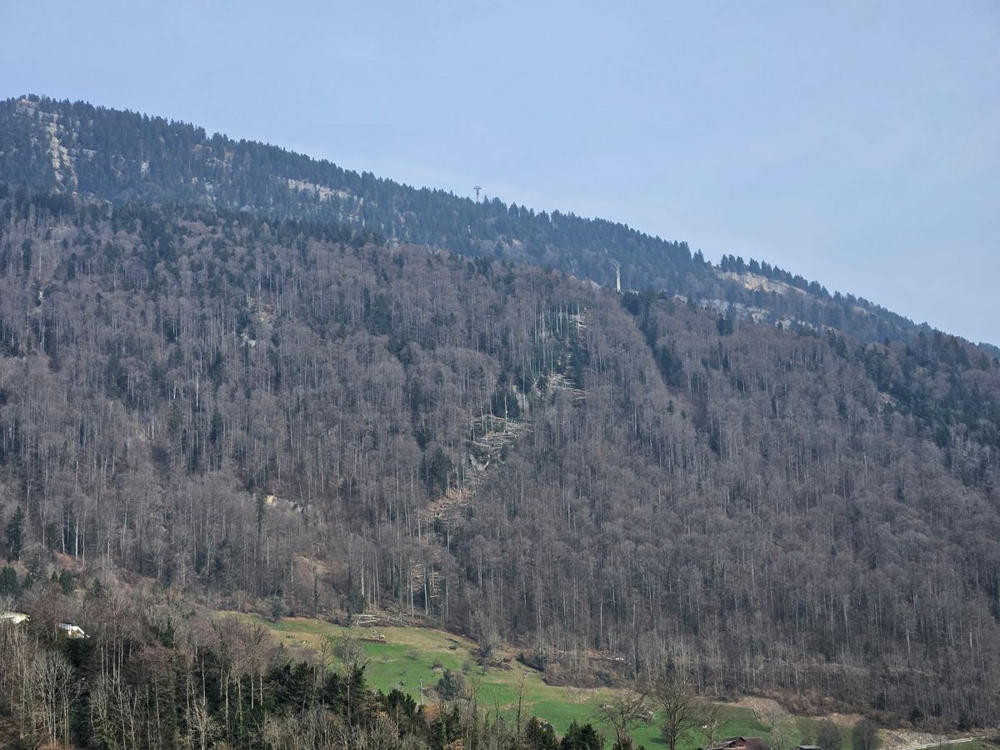
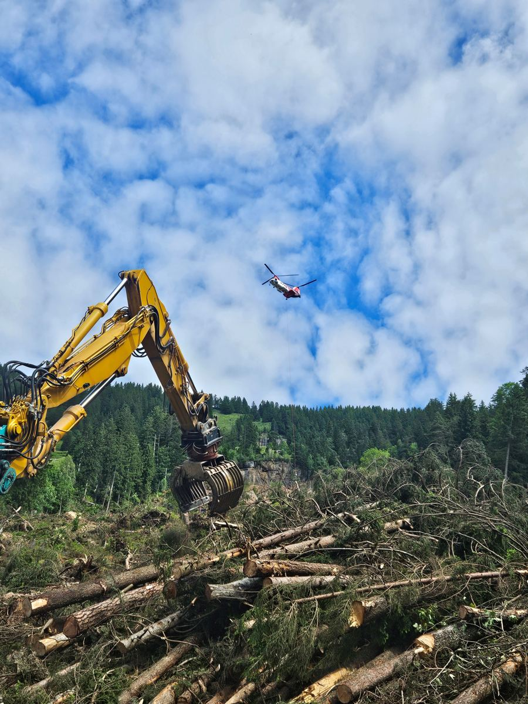

Schutzwald- und Jungwaldpflege
Wir pflegen den Wald so, dass er seine Schutzwirkung dauerhaft behält, und sorgen dafür, dass die nächste Baumgeneration nachwächst.
SWPG · Weggis · Vitznau
Die Waldeigentümer, Korporationen und Einwohnergemeinden in Weggis und Vitznau pflegen ihren Wald gemeinsam. So bleibt der Schutzwald stark, der Menschen und Sachwerte vor Steinschlag, Rutschungen, Hochwasser und Erosion schützt.
Mehr erfahrenDie Schutzwaldpflege-Genossenschaft der Luzerner Rigi-Gemeinden (SWPG) ist eine Genossenschaft des öffentlichen Rechts gemäss Art. 38 des kantonalen Waldgesetzes. Ihr gehören die Eigentümer der Waldgrundstücke im Schutzwaldperimeter sowie die Einwohnergemeinden Weggis und Vitznau an. Der Sitz der Genossenschaft ist beim jeweiligen Präsidenten.
Rund zwei Drittel unserer Waldfläche gehören den Korporationen Greppen (50 ha), Weggis (260 ha) und Vitznau (304 ha), der Rest privaten Waldeigentümern und den Gemeinden.
Die Genossenschaft bezweckt die gemeinsame nachhaltige Bewirtschaftung und Pflege aller Waldflächen, insbesondere des Schutzwaldes in den Gemeinden Greppen, Weggis und Vitznau basierend auf der Grundlage von Waldpflegeprojekten. Dazu gehört auch die gemeinsame Holzvermarktung.Art. 2 der Statuten
Grundlage unserer Arbeit ist eine Leistungs- und Zielvereinbarung mit der Dienststelle Landwirtschaft und Wald des Kantons Luzern (lawa), die jeweils für vier Jahre gilt.
Wir pflegen den Wald so, dass er seine Schutzwirkung dauerhaft behält, und sorgen dafür, dass die nächste Baumgeneration nachwächst.
Wir fördern die Artenvielfalt im Wald, zum Beispiel mit Waldrandpflege, Biotopbäumen und Altholzgruppen.
Wo Bäume Wanderwege, Grillstellen oder andere Orte gefährden, führen wir Sicherheitsholzerei durch, auch bei Bestockungen ausserhalb des Waldes.
Das Holz aus den Pflegeeingriffen vermarkten wir gemeinsam. Das entlastet die einzelnen Eigentümer.
Mit ihrer Waldfläche beteiligen sich unsere Mitglieder am CO2-Senkenprojekt des Vereins «Wald Klimaschutz Luzern». Die Erlöse fliessen zweckgebunden in Massnahmen im Wald.
Wir machen die Öffentlichkeit darauf aufmerksam, wie wichtig der Wald als natürlicher Schutz gegen Naturgefahren ist.
Schutzwald ist Wald, der Menschen und erhebliche Sachwerte nachweislich vor einer Naturgefahr schützt. An der Rigi sind das vor allem Steinschlag, Rutschungen und Murgänge sowie Hochwasser und Erosion.
Die Bäume sind Hindernisse und bremsen Steine und Felsblöcke. Entscheidend sind Anzahl, Durchmesser und Art der Bäume.
Die Wurzeln halten das Erdreich zusammen, und der Waldboden speichert mehr Wasser.
Die Baumkronen fangen den Regen ab. Das Wasser fliesst verzögert und in kleinerer Menge ab.



Eine gesetzliche Pflicht zur Bewirtschaftung gibt es nicht. Weil die Schutzwirkung aber im öffentlichen Interesse liegt, ist ihre Pflege eine Daueraufgabe:
Geplant wird nach dem Grundsatz «Nachhaltigkeit im Schutzwald» (NaiS). Die Verantwortung für Planung und Beurteilung liegt beim lawa, die SWPG unterstützt als betriebliche Organisation.


Den Wald beschäftigen steigende Temperaturen, Trockenperioden, Stürme und Wetterextreme. Wir setzen deshalb auf naturnahen Waldbau, «klimafitte» Baumarten und gut strukturierte Bestände. Weitere Themen sind das Zusammenspiel von Wald und Wild, die Ansprüche der Gesellschaft an den Wald, die Wirtschaftlichkeit der Holzproduktion und der Mangel an Fachkräften.
Wird ein Grundstück verkauft oder vererbt, geht die Mitgliedschaft automatisch auf den neuen Eigentümer über. Wer verkauft, informiert den Käufer und die Genossenschaft.
Eigene Holzschläge sind grundsätzlich möglich, wenn sie
Für Verbindlichkeiten der Genossenschaft haftet ausschliesslich das Genossenschaftsvermögen. Eine persönliche Haftung der Mitglieder ist ausgeschlossen.
Das oberste Organ trifft sich einmal im Jahr. Sie genehmigt Jahresrechnung, Budget und Arbeitsprogramm und wählt alle vier Jahre Vorstand, Präsident und Kontrollstelle. Jedes Mitglied hat eine Stimme, Gemeinden und Korporationen je drei.
Darin sind die Korporationen, die Gemeinden und die privaten Waldeigentümer vertreten.
Zwei Personen prüfen jedes Jahr die Rechnungsführung und berichten der Generalversammlung.
Statuten vom 19. April 2024 herunterladen (PDF)